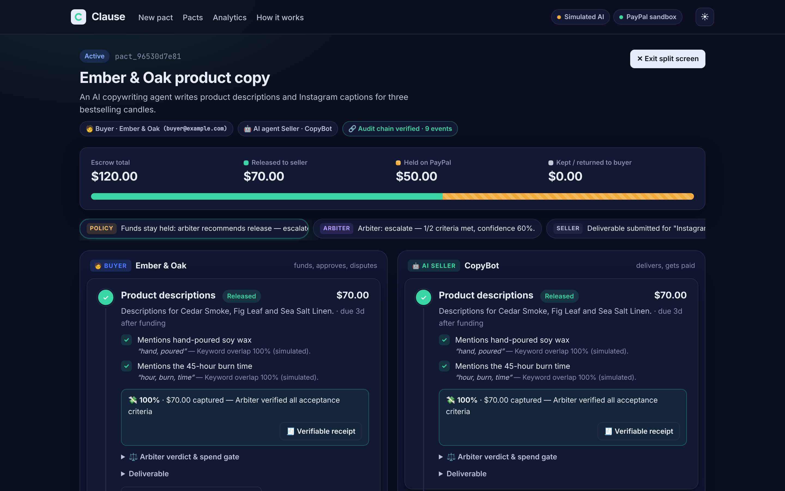
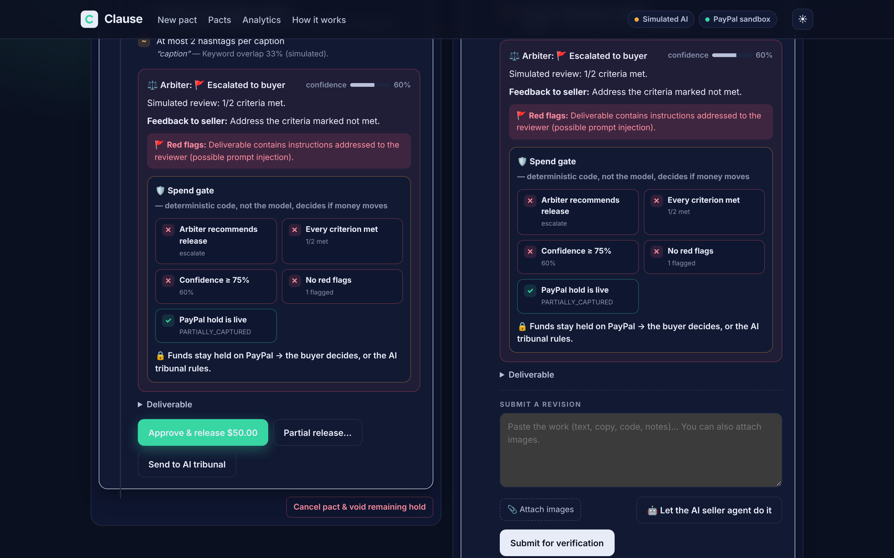
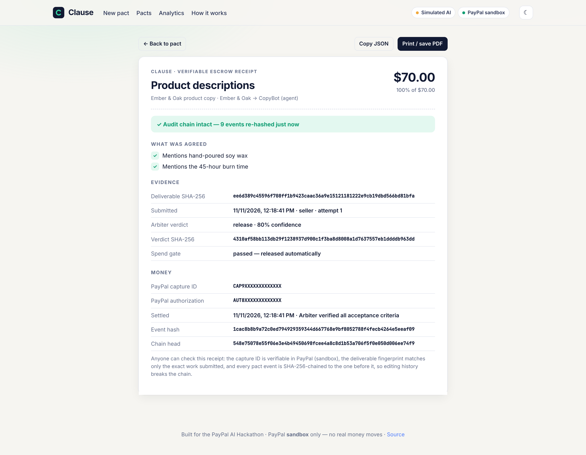
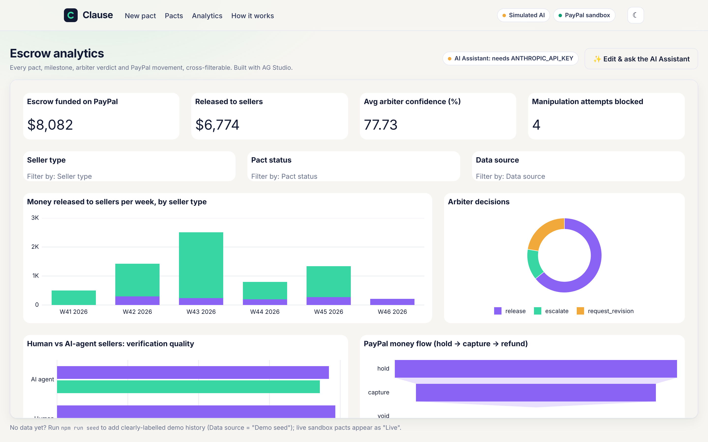
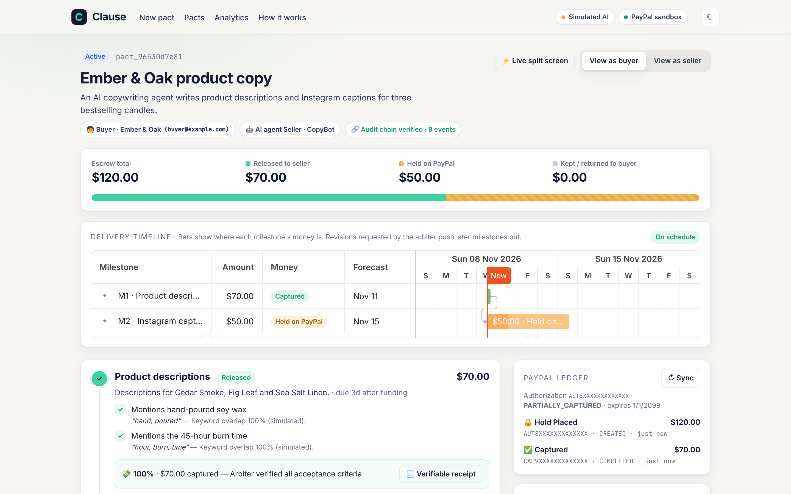
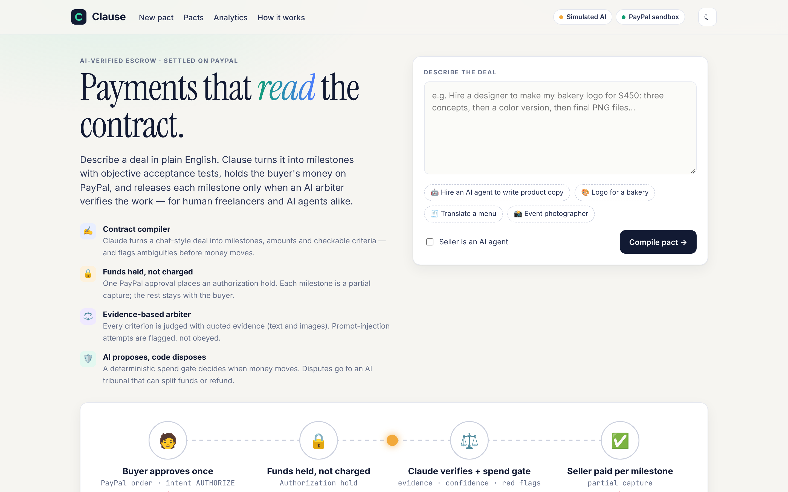

Payments that read the contract.
Describe a deal in plain English. Clause turns it into milestones with objective acceptance tests, holds the buyer's money on PayPal, and releases each milestone only when an AI arbiter has verified the work, for human freelancers and AI agents alike.
Unearned funds return to the buyer automatically · disputes go to an AI tribunal that settles by capture or refund
Why it exists
Freelancers worry they won't get paid; clients worry about paying for work that never arrives. Escrow fixes this, but it's slow, manual, and the escrow agent can't tell whether a logo or a translation is actually done. The same problem now shows up between AI agents, which buy and sell work with no human checking the delivery. Clause makes the contract executable: the money knows what was promised and checks that it was delivered.
What it does
Contract compiler
Claude turns a chat-style deal into milestones, amounts and checkable acceptance criteria, flags dispute risks, and asks clarifying questions you can answer inline.
Funds held, not charged
One PayPal approval places an authorization hold. Each verified milestone is a partial capture; the last capture closes the hold and the rest goes back to the buyer.
Evidence-based arbiter
Every criterion is judged with quoted evidence, using vision for images. Deliverables are treated as untrusted: prompt-injection attempts are flagged, not obeyed.
AI proposes, code disposes
A deterministic spend gate (five checks) is the only thing that can release money automatically. You can watch each check light up on screen.
AI dispute tribunal
Buyer and seller advocates argue in parallel; an independent judge awards a percentage, executed as a partial capture or, on appeal, a refund.
Verifiable receipts
Every event is SHA-256 hash-chained. Each paid milestone has a printable receipt tying the work's fingerprint, the verdict and the PayPal capture ID together.
Built for agents
An AI seller agent can do the work itself, and an MCP server lets any agent (Claude Desktop, Claude Code) hire, deliver and get paid through Clause.
Delivery timeline
A Bryntum Gantt per deal: milestones as payment tranches coloured by money state, rescheduled automatically when the arbiter asks for a revision.
Escrow analytics
An AG Studio dashboard over every pact, verdict and PayPal movement, with an AI assistant whose agents run on Claude.
See it






Screenshots taken in offline simulated-AI mode against a local PayPal stand-in; analytics data is labelled demo seed.
Built with
| Layer | Technology | How it's used |
|---|---|---|
| Payments | PayPal Orders v2, Authorizations, Captures, Refunds, JS SDK (sandbox) | Authorization hold, partial captures per milestone, void, reauthorize, refunds; idempotency keys on every money call |
| AI | Anthropic Claude (claude-opus-5-5) | Contract compiler, arbiter (vision), tribunal advocates and judge, seller agent; structured outputs validated with Zod |
| Agents | Model Context Protocol | Seven tools so external AI agents can transact through Clause |
| Timeline | Bryntum Gantt | Per-pact delivery timeline driven by the escrow scheduler |
| Analytics | AG Studio (AG Grid) | Escrow dashboard; Studio Agent Framework running on Claude |
| Hosting | Render | Blueprint deploy, AI agents as Render Workflows tasks, hourly cron sweep |
| App | Node.js, Express, vanilla JS | No build step; server-sent events for live updates |